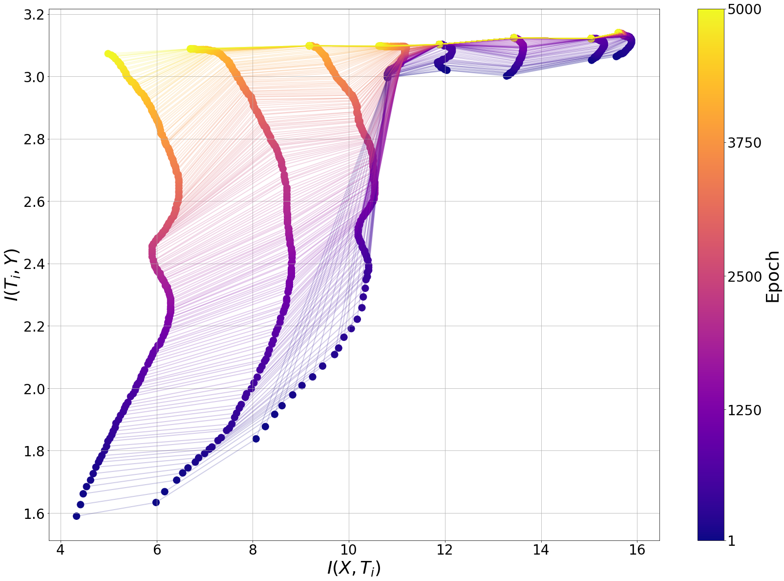
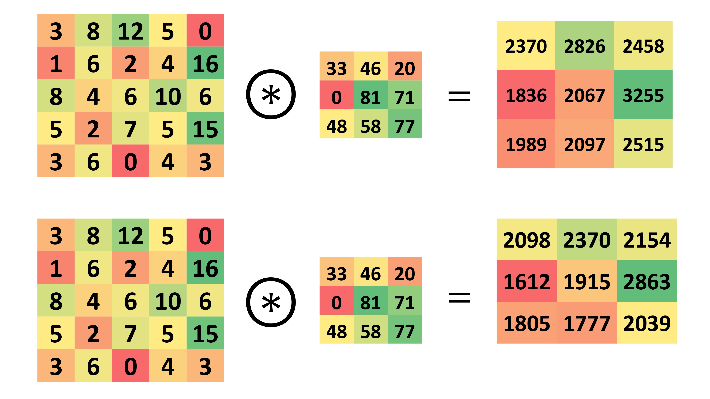
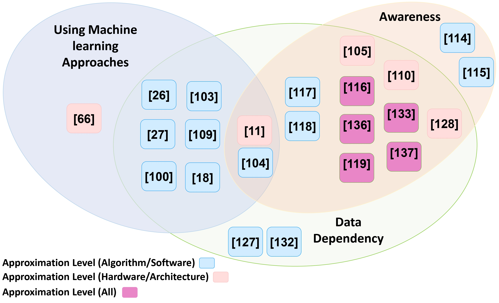
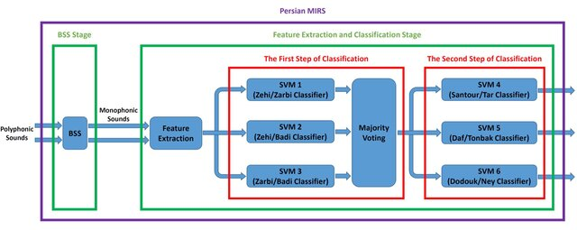

|
Salar Shakib I am Salar Shakibhamedan, a Ph.D. candidate at TU Wien (Vienna University of Technology), specializing in Edge AI and efficient deep learning. My research focuses on optimizing AI models for performance and scalability in resource-constrained environments. Currently, I am a visiting researcher in SciTech Lab at University of California, Irvine (UCI), where my work studies techniques to enhance LLM usability in healthcare domain. |
ResearchI’m interested in deep learning, optimization and generalization, and efficient AI. My research focuses on optimizing deep learning and AI models to make them more efficient for deployment, especially in resource-constrained environments such as edge AI, by studying and analyzing novel optimization techniques and their impact on model behavior. Recently, I have been working on generative AI, particularly LLMs, with a focus on applications in the healthcare domain. |

|
Approximation Strategies for Vision Models on Edge Devices: An Accuracy-Efficiency Trade-off
Dewant Katare, Salar Shakibhamedan, Nima Amirafshar, Nima TaheriNejad, Axel Jantsch, Marijn Janssen, Aaron Yi Ding TechXiv, 2024 TechXiv Efficient deployment of AI models in autonomous and edge applications requires balancing computational demands with performance. This paper proposes three approximation schemes—approximate multipliers, low-multiplicative convolution, and variational inference with quantization—that collectively address this challenge across CNNs, DNNs, and especially Vision Transformers. By integrating these techniques, the study achieves substantial reductions in energy consumption and model size while maintaining accuracy close to baseline levels. The results highlight the potential of approximate computing as a viable strategy for enabling high-performance Vision Transformers and other models in resource-constrained environments. |
|

|
An Analytical Approach to Enhancing DNN Efficiency and Accuracy Using
Approximate Multiplication
Salar Shakibhamedan, Anice Jahanjoo, Amin Aminifar, Nima Amirafshar, Nima TaheriNejad, Axel Jantsch ICML Workshop on Advancing Neural Network Training: Computational Efficiency, Scalability, and Resource Optimization, 2024 Paper Optimization and approximation techniques are commonly used to improve the efficiency of DNNs, but they often come at the cost of reduced performance. This paper introduces a novel approach that achieves both efficiency and performance improvement simultaneously through approximation. By leveraging Information Bottleneck theory, the work provides the first formal connection between efficiency techniques and information-theoretic analysis, using the information plane to study how approximation affects the learning behavior of DNNs. |

|
Harnessing Approximate Computing for Machine Learning
Salar Shakibhamedan, Amin Aminifar, Luke Vassallo, Nima TaheriNejad ISVLSI, 2024 Paper This paper presents a comprehensive overview of Approximate Computing (AxC) techniques in Machine Learning, with a focus on energy-efficient Deep Learning. It explores four main strategies—quantization, approximate multiplication, in-memory computing, and input-dependent approximation—and discusses their impact on reducing energy consumption while maintaining reliable performance. The work highlights both software-based implementations for general-purpose systems and hardware-integrated solutions for custom SoC/SiP designs, aiming to support robust and efficient AI acceleration in mobile and edge applications. |
|

|
ACE-CNN: Approximate Carry Disregard Multipliers for Energy-Efficient CNN-Based Image Classification
Salar Shakibhamedan, Nima Amirafshar, Ahmad Sedigh Baroughi, Hadi Shahriar Shahhoseini, Nima TaheriNejad IEEE Transaction (TCAS-I), 2024 Paper CNNs are powerful but resource-intensive, making them challenging to deploy on edge and power-constrained devices. This paper introduces a novel family of approximate multipliers that reduce energy and delay while maintaining strong machine learning performance. It presents the first comprehensive study to demonstrate improvements in both computational efficiency and model accuracy, enabling practical, high-performance CNNs for resource-limited environments. |
|

|
EASE: Energy Optimization through Adaptation — A Review of Runtime
Energy-Aware Approximate Deep Learning Algorithms
Salar Shakibhamedan, Amin Aminifar, Nima TaheriNejad, Axel Jantsch TechXiv, 2024 TechXiv This survey explores the landscape of runtime adaptive Approximate Computing (AxC) techniques in Deep Learning, with a focus on energy-efficient deployment in domains such as computer vision and medical applications. It reviews methods like adaptive pruning, quantization, approximate multipliers, memory-aware optimizations, and reinforcement learning-based control strategies, particularly for CNNs. The work highlights the role of resource constraints and application-specific needs in selecting suitable AxC techniques and provides insights into their benefits and limitations, offering a valuable reference for researchers and practitioners aiming to balance energy efficiency with model accuracy. |
|

|
Persian Musical Instrument Recognition System
Salar Shakibhamedan, Kooshan Hashemifard, Farhad Faradji, Mansour Vali International Conference on Advances Research on Electrical and Computer Engineering (ICNRAECE), 2016 Paper This paper introduces the first Persian musical instrument recognition system designed to identify instruments in polyphonic audio recordings. The system operates in two stages: blind source separation using FastICA, followed by feature extraction and a two-step classification process based on Mel-frequency cepstral coefficients and spectral features. It first recognizes the instrument family, then the specific instrument. The model achieves high accuracy, demonstrating its effectiveness for analyzing complex Persian music signals. |
Miscellanea |

{kind=link}
|
Feel free to steal this website's source code. Do not scrape the HTML from this page itself, as it includes analytics tags that you do not want on your own website — use the github code instead. Also, consider using Leonid Keselman's Jekyll fork of this page. |